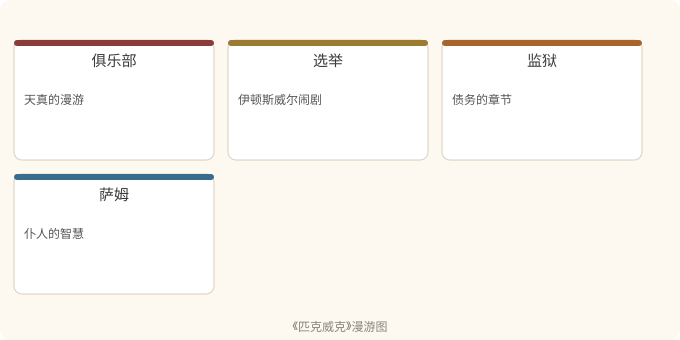

匹克威克外传
一、基本信息
| 作者 | 狄更斯 |
|---|---|
| 成书/出版 | 1836—1837年（作者页 B120 口径：匹克威克外传（1836—37）） Charles Dickens — Encyclopaedia Britannica（百科全书） |
| 国别/地区 | 英国 |
| 时代 | 近代 · 19世纪 |
| 体裁 | 长篇小说 |
| 语言 | 英语 |

《匹克威克》漫游图（主题·结构图）
二、创作背景
作者页（B120）：狄更斯 major_works 载'匹克威克外传（1836—37）'（B120 作者页定位，详见 dawei 条核对）。
题材（通说待核）：匹克威克俱乐部的漫游——狄更斯的成名之作（23岁）。
三、内容脉络
俱乐部漫游：萨姆·维勒的随从、伊顿斯威尔选举、监狱篇章（通说待核）。
四、主要人物表
| 人物 | 身份 | 说明 |
|---|---|---|
| 匹克威克先生 | 俱乐部长 | 天真的绅士（通说待核） |
| 萨姆·维勒 | 仆人 | 山姆式智慧（通说待核） |
五、主题与艺术特点
- 幽默漫游体（通说）。
- 英国选举与法律的讽刺（通说待核）。
- 连载体成名的起点（通说）。
六、影响与评论
- 作者页：狄更斯成名作（B120 作者页口径）。
Charles Dickens — Encyclopaedia Britannica（百科全书） - 作者页：狄更斯代表作谱系（B120 作者级）。
Charles Dickens — Encyclopaedia Britannica（百科全书）
七、阅读建议
难点
- 连载体的松散。
- 1830年代选举制度。
- 《匹克威克外传》（人民文学出版社蒋天佐译本，通说待核）。
- 英文原版（公有领域）。
狄更斯长篇的起点。
八、待核实
- 1836—37年连载（Chapman & Hall说）核对。
- 匹克威克/萨姆人名核对。
- 蒋天佐译本信息待核。